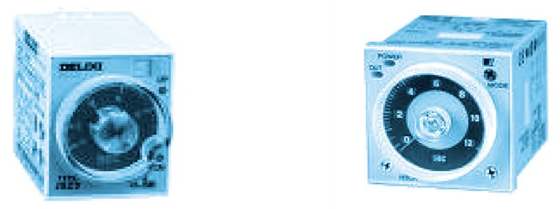
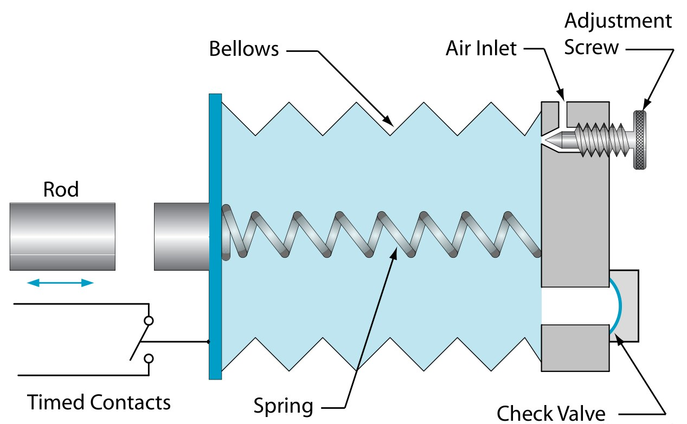
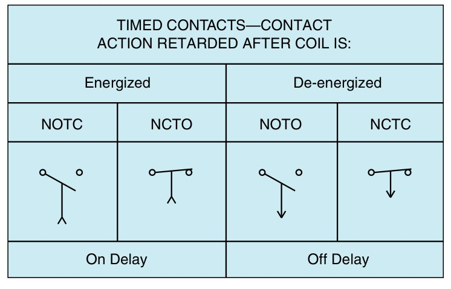

ตัวตั้งเวลา (timer relay) คือรีเลย์ที่หน้าสัมผัสไม่เปลี่ยนทันที แต่รอเวลาที่ตั้งไว้ก่อน ใช้ในวงจรที่ต้องทำงานตามลำดับเวลา เช่น เริ่มมอเตอร์ตัวที่สองหลังตัวแรก 5 วินาที หรือสลับจากสตาร์เป็นเดลตา ตัวตั้งเวลามีสองแบบหลัก: แบบหน่วงเวลาเมื่อป้อนไฟ (on-delay) และแบบหน่วงเวลาเมื่อตัดไฟ (off-delay) หน้านี้ให้กดสัญญาณเข้าเองแล้วดูแผนภาพเวลาเคลื่อนไปจริง ต่อวงจรหลอดกับตัวตั้งเวลาทั้งสองแบบ และอ่านสัญลักษณ์กับเลขขั้วตามมาตรฐานของคณะกรรมาธิการไฟฟ้าระหว่างประเทศ (International Electrotechnical Commission, IEC)
A timer relay is a relay whose contacts do not change at once but wait for a set time. It is used wherever things must happen in a timed order, such as starting a second motor 5 s after the first or changing from star to delta. There are two main kinds: on-delay and off-delay. On this page you hold the input yourself and watch the timing diagram run, wire lamps to both kinds of timer, and read their IEC (International Electrotechnical Commission) symbols and terminal numbers.
รูป 3.6 ของตำราไทยคือตัวตั้งเวลาแบบหน้าปัดที่พบมากในชุดฝึกและตู้ควบคุมในไทย เสียบลงบนฐาน 8 ขาหรือ 11 ขา หมุนหน้าปัดเลือกเวลา บางรุ่นเลือกช่วงเวลาและหน้าที่ได้หลายแบบ การ์ดด้านล่างเป็นตัวตั้งเวลาแบบติดรางยึดอุปกรณ์มาตรฐานกว้าง 35 mm (ราง DIN) ที่ใช้งานจริงในตู้ มีปุ่มปรับเวลา 0.5–10 วินาที หลอดไดโอดเปล่งแสง (light-emitting diode, LED) และขั้ว A1 A2 15 16 18 พิมพ์ไว้บนตัว
รูป 9-2 ของ EMC9 เป็นตัวตั้งเวลาแบบนิวแมติกรุ่นเก่า: เมื่อคอยล์ทำงาน ถุงลมพองขึ้นช้า ๆ เพราะอากาศเข้าได้ทางลิ้นเข็ม (needle valve) ที่ปรับได้เท่านั้น เมื่อตัดไฟ แกนเหล็กตกลงและดันให้คืนตัวเกือบทันที (อากาศออกทางลิ้นกันกลับ) รูป "ร่ม" บนสัญลักษณ์หน้าสัมผัสหน่วงเวลาสื่อความหมายเดียวกัน คือการเคลื่อนที่ที่ถูกหน่วงให้ช้าลงเหมือนร่มชูชีพ ส่วนตารางของ EMC9 คือสัญลักษณ์แบบ NEMA ของอเมริกา (National Electrical Manufacturers Association สมาคมผู้ผลิตอุปกรณ์ไฟฟ้าของสหรัฐฯ) ที่ต่างจาก IEC (ดูหัวข้อ N)
Thai textbook Fig. 3.6 shows dial timers of the kind found on Thai training boards and panels: they plug into an 8- or 11-pin socket and the dial sets the time; some models also select the range and the function. The card below is a timer for the standard 35 mm DIN rail, as used in a real panel, with a 0.5–10 s dial, light-emitting diodes (LEDs) and terminals A1 A2 15 16 18 printed on it.
EMC9 Fig. 9-2 is an old pneumatic timer: when the coil operates, the bellows rises slowly, because air can only get in through an adjustable needle valve; when the coil drops out, the plunger falls and resets it almost at once (the air leaves through the check valve). The "parachute" on a timed-contact symbol stands for the same idea: a movement that is slowed down, like a falling parachute. The EMC9 table shows the NEMA (National Electrical Manufacturers Association, US) symbols, which differ from IEC (see section N).


เลือกแบบตัวตั้งเวลาและเวลาที่ตั้ง แล้วกดปุ่ม "สัญญาณเข้า" ค้างไว้ แผนภาพเลื่อนไปตามเวลาจริง: เส้นแถวบนสุดคือคอยล์หรือสัญญาณควบคุม เส้นเขียวคือหน้าสัมผัสปกติเปิด 15–18 เส้นแดงคือหน้าสัมผัสปกติปิด 15–16 ลองกดนานกว่าเวลาที่ตั้ง กดสั้นกว่า และกดหลายครั้งติดกัน ทุกครั้งที่ปล่อยปุ่มจะบันทึกลงตาราง
Choose the kind of timer and the set time, then hold the "Input" button. The diagram scrolls in real time: the top trace is the coil or control input, green the NO contact 15–18, red the NC contact 15–16. Try holding longer than the set time, shorter, and several times in a row. Each release is recorded below.
วงจร KT1: สวิตช์ S1 ป้อนไฟตัวตั้งเวลาหน่วงเมื่อป้อนไฟ KT1 (ตั้ง 5 วินาที) หน้าสัมผัส 15–18 ต่อหลอดเขียว H1 และ 15–16 ต่อหลอดแดง H2 วงจร KT2: กดปุ่ม S1 แล้วปล่อย ตัวตั้งเวลาหน่วงเมื่อตัดไฟ KT2 (ตั้ง 5 วินาที) ให้หลอดเหลือง H1 ติดต่ออีก 5 วินาทีหลังปล่อย เหมือนไฟบันไดหรือพัดลมระบายความร้อนที่หมุนต่ออีกพักหนึ่งหลังเครื่องหยุด ทุกครั้งที่หลอดเปลี่ยนจะบันทึกเวลาที่วัดได้
KT1 circuit: switch S1 energises on-delay timer KT1 (set to 5 s); contact 15–18 lights green H1 and 15–16 lights red H2. KT2 circuit: press push button S1 and let go; off-delay timer KT2 (set to 5 s) keeps yellow H1 lit for 5 s after the release, like a stairway light or a cooling fan that runs on after the machine stops. Each lamp change is recorded with the measured time.
วงจรของ KT2 ใช้ตัวตั้งเวลาหน่วงเมื่อตัดไฟแบบที่เริ่มนับเวลาเมื่อไฟเลี้ยง A1–A2 หายไป ตัวตั้งเวลาหน่วงเมื่อตัดไฟใน CADe SIMU ก็ทำงานแบบนี้ ถ้าเป็นตัวตั้งเวลาอิเล็กทรอนิกส์ที่สั่งด้วยสัญญาณควบคุม ให้ต่อไฟเลี้ยง A1–A2 ไว้ตลอด และต่อ S1 เข้าขั้ว B1 ตามแผนภาพเวลาในหัวข้อ A
The KT2 circuit shows a true off-delay (power-off-delay) timer: the delay starts when A1–A2 loses supply. This is also how the CADe SIMU off-delay coil behaves. With a signal-controlled electronic timer, keep A1–A2 permanently supplied and wire S1 to the control input B1, as in the timing diagram of section A.
อ่านรูปร่มที่ติดข้างใบหน้าสัมผัส: ใบหน้าสัมผัสเคลื่อนเข้าหาจุดศูนย์กลางของส่วนโค้งได้ช้า หน่วงเมื่อป้อนไฟหันด้านเว้าของส่วนโค้งเข้าหาใบหน้าสัมผัส จึงหน่วงตอนทำงาน (ใบหน้าสัมผัสเคลื่อนไปทางขวา) หน่วงเมื่อตัดไฟหันด้านนูนเข้าหาใบหน้าสัมผัส จึงหน่วงตอนกลับ (เคลื่อนกลับไปทางซ้าย) หน้าสัมผัสปกติเปิดและปกติปิดของแบบเดียวกันใช้ส่วนโค้งเดียวกัน เพราะใบหน้าสัมผัสทุกตัวของอุปกรณ์เคลื่อนไปทางเดียวกันเมื่อทำงาน
Reading the parachute beside the blade: the blade moves slowly towards the centre of the arc. On-delay turns the hollow side of the arc to the blade, so operating (the blade swinging right) is delayed; off-delay turns the bulge to the blade, so the return (swinging back left) is delayed. The NO and NC contacts of one kind of timer carry the same arc, because all blades of a device move the same way when it operates.
ตาราง 9-1 ของ EMC9 ใช้ชื่อแบบอเมริกัน: NOTC (ปกติเปิด ปิดหลังหน่วงเวลา) และ NCTO (ปกติปิด เปิดหลังหน่วงเวลา) สำหรับหน่วงเมื่อป้อนไฟ ส่วน NOTO (ปกติเปิด เปิดหลังหน่วงเวลา) และ NCTC (ปกติปิด ปิดหลังหน่วงเวลา) สำหรับหน่วงเมื่อตัดไฟ สัญลักษณ์แบบ NEMA วางขั้วสองขั้วของหน้าสัมผัสเรียงกันตามแนวนอน (เพราะวาดวงจรเป็นแนวนอน) และบอกการหน่วงเวลาด้วยก้านใต้ใบหน้าสัมผัส: ปลายก้านเป็นหัวลูกศรชี้ขึ้น (รูปตัววีคว่ำ) = หน่วงเมื่อป้อนไฟ หัวลูกศรชี้ลง = หน่วงเมื่อตัดไฟ ส่วน IEC ใช้รูปร่ม ในแบบของวิชานี้ใช้สัญลักษณ์ IEC ในตารางด้านบนเท่านั้น
EMC9 Table 9-1 uses the American names: NOTC (normally open, timed closed) and NCTO (normally closed, timed open) for on-delay, NOTO (normally open, timed open) and NCTC (normally closed, timed closed) for off-delay. NEMA symbols put the two terminals side by side for a horizontal rung and mark the delay with a stem under the blade: an arrowhead pointing up at its end for on-delay, one pointing down for off-delay. IEC uses the parachute instead; drawings in this course use only the IEC symbols in the table above.

ตัวตั้งเวลาหน่วงเมื่อป้อนไฟตั้งไว้ 3 วินาที ป้อนไฟเข้าคอยล์ตามเส้นแถวบนสุด: ช่วงแรก 1–6 วินาที ช่วงที่สอง 7.5–9.5 วินาที (ก) หน้าสัมผัส 15–18 ต่อช่วงไหน (ข) ช่วงที่สองทำไมหน้าสัมผัสไม่เปลี่ยน (ค) ถ้าเปลี่ยนเป็นตัวตั้งเวลาหน่วงเมื่อตัดไฟ 3 วินาที หน้าสัมผัส 15–18 ต่อช่วงไหน
An on-delay timer is set to 3 s. Its coil is energised as the top trace shows: first from 1 to 6 s, then from 7.5 to 9.5 s. (a) When is contact 15–18 closed? (b) Why does nothing happen during the second pulse? (c) With a 3 s off-delay timer instead, when would 15–18 be closed?